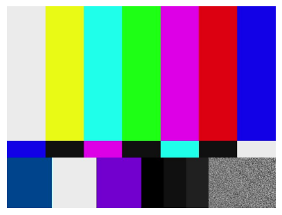

from mavcom.mavlink import CameraClient, CameraServer, MAVCom, GimbalClient, GimbalServer, mavutil, mavlink
# from mavcom.mavlink.camera_client import CameraClient
# from mavcom.mavlink.camera_server import CameraServer
# from mavcom.mavlink import Component, mavutil, mavlink, MAVCom
from mavcom.utils import boot_time_str, read_camera_dict_from_toml, find_config_dir
from mavcom.camera.gst_cam import GSTCamera # fake camera for testing
from gstreamer import GstPipeline
import gstreamer.utils as gst_utils
from mavcom.logging import LogLevels
from pathlib import Path
import cv2Mavlink Camera Walkthrough
Documentation
Introduction
Here we create an entire mavlink connection with client at the GCS and server at the camera. The client and server are connected via a UDP connection or a radio modem serial connection The camera can be controlled via the client, and the video stream is sent from the server to the client. The client can also request camera information, storage information, etc from the server.
Create a CameraClient and CameraServer
MAV_TYPE_GCS = mavutil.mavlink.MAV_TYPE_GCS
MAV_TYPE_CAMERA = mavutil.mavlink.MAV_TYPE_CAMERACreate a gstreamer pipelene to display the received video
Create Pysical camera object, here either CV2Camera or GSTCamera The toml file contains the camera parameters, such as resolution, framerate, etc and also the gstreamer pipeline command to create the video streams.
cam_gst_1 = GSTCamera(camera_dict=read_camera_dict_from_toml(find_config_dir() / "test_camera_info.toml"))
# cam_cv2_1 = CV2Camera(camera_dict=read_camera_dict_from_toml(find_config_dir() / "test_camera_info.toml"))INFO | mavcom.GSTCamera | 38.075 | gst_cam.py:317 | MainThread | GSTCamera Started
INFO | pygst.GstPipeli | 38.086 | gst_tools.py:223 | MainThread | Starting GstPipeline: videotestsrc ! video/x-raw,width=1920,height=1080,framerate=30/1 ! tee name=t t. ! queue ! autovideosink t. ! queue leaky=2 ! intervideosink channel=channel_0 t. ! queue leaky=2 ! intervideosink channel=channel_1 t. ! queue leaky=2 ! videoconvert ! videorate drop-only=true ! intervideosink channel=channel_2 John Doe SINK_PIPELINE = gst_utils.to_gst_string([
'udpsrc port=5000 ! application/x-rtp, media=(string)video, clock-rate=(int)90000, encoding-name=(string)H264, payload=(int)96',
'rtph264depay ! avdec_h264',
'fpsdisplaysink',
# 'autovideosink',
])
rcv_pipeline = GstPipeline(SINK_PIPELINE) # Create a Gstreamer pipeline to display the received video on fpsdisplaysinkCreate the client mavlink connection, this is mounted on the GCS
# assert False# for the client, we use the udpin connection, you can use serial as an option i.e "/dev/ttyACM0", "/dev/ttyUSB0"
client = MAVCom("udpin:localhost:14445", source_system=111, loglevel=LogLevels.INFO)INFO | mavcom.MAVCom | 38.254 | mavcom.py:393 | Thread-5 (listen) | MAVLink Mav2: True, source_system: 111Create the server mavlink connection, this is mounted on the UAV companion computer
# for the server, we use the udpout connection, you can use serial as an option "/dev/ttyUSB0"
server = MAVCom("udpout:localhost:14445", source_system=222)INFO | mavcom.MAVCom | 38.365 | mavcom.py:393 | Thread-6 (listen) | MAVLink Mav2: True, source_system: 222Add the camera client to the client mavlink connection
cam = client.add_component(CameraClient(mav_type=mavlink.MAV_TYPE_GCS, source_component=11))INFO | mavcom.CameraClien | 38.404 | component.py:135 | MainThread | Component Started self.source_component = 11, self.mav_type = 6, self.source_system = 111Add the camera server to the server mavlink connection
server.add_component(CameraServer(mav_type=mavlink.MAV_TYPE_CAMERA, source_component=mavlink.MAV_COMP_ID_CAMERA, camera=cam_gst_1))INFO | mavcom.CameraServe | 38.418 | component.py:135 | MainThread | Component Started self.source_component = 100, self.mav_type = 30, self.source_system = 222<CameraServer>Wait for the heartbeat from the camera server
async def doit():
ret = await cam.wait_heartbeat(remote_mav_type=mavlink.MAV_TYPE_CAMERA)
print(f"Heartbeat received {ret = }")
await doit()Heartbeat received ret = (222, 100)Set the target system and component for the camera client and request camera information, storage information, camera capture status, and camera settings
async def doit():
msg = await cam.request_message(mavlink.MAVLINK_MSG_ID_CAMERA_INFORMATION, target_system=222, target_component=mavlink.MAV_COMP_ID_CAMERA)
print (f"1 MAVLINK_MSG_ID_CAMERA_INFORMATION {msg }")
msg = await cam.request_message(mavlink.MAVLINK_MSG_ID_STORAGE_INFORMATION, target_system=222, target_component=mavlink.MAV_COMP_ID_CAMERA)
print (f"2 MAVLINK_MSG_ID_STORAGE_INFORMATION {msg }")
msg = await cam.request_message(mavlink.MAVLINK_MSG_ID_CAMERA_CAPTURE_STATUS, target_system=222, target_component=mavlink.MAV_COMP_ID_CAMERA)
print (f"3 MAVLINK_MSG_ID_CAMERA_CAPTURE_STATUS {msg }")
msg = await cam.request_message(mavlink.MAVLINK_MSG_ID_CAMERA_SETTINGS, target_system=222, target_component=mavlink.MAV_COMP_ID_CAMERA)
print (f"4 MAVLINK_MSG_ID_CAMERA_SETTINGS {msg }")
await doit()1 MAVLINK_MSG_ID_CAMERA_INFORMATION CAMERA_INFORMATION {time_boot_ms : 520, vendor_name : John Doe, model_name : Fake Camera, firmware_version : 1, focal_length : 8.0, sensor_size_h : 6.0, sensor_size_v : 4.0, resolution_h : 1920, resolution_v : 1080, lens_id : 0, flags : 0, cam_definition_version : 1, cam_definition_uri : http://example.com/camera_definition.xml, gimbal_device_id : 0}
2 MAVLINK_MSG_ID_STORAGE_INFORMATION STORAGE_INFORMATION {time_boot_ms : 621, storage_id : 0, storage_count : 1, status : 0, total_capacity : 100000000.0, used_capacity : 0.0, available_capacity : 100000000.0, read_speed : 0.0, write_speed : 0.0, type : 0, name : }
3 MAVLINK_MSG_ID_CAMERA_CAPTURE_STATUS CAMERA_CAPTURE_STATUS {time_boot_ms : 722, image_status : 0, video_status : 0, image_interval : 0.0, recording_time_ms : 0, available_capacity : 0.0, image_count : 0}
4 MAVLINK_MSG_ID_CAMERA_SETTINGS CAMERA_SETTINGS {time_boot_ms : 824, mode_id : 0, zoomLevel : 0.0, focusLevel : 0.0}Start an image capture seqeunce, and display the images as they arrive
# cam.image_start_capture(interval=0.1, count=10)
# while cam_gst_1.capture_thread.is_alive():
# if cam_gst_1.last_image is not None:
# cv2.imshow('gst_src', cam_gst_1.last_image)
# cam_gst_1.last_image = None
# cv2.waitKey(10)AssertionError: call set_target(target_system, target_component) firstShutdown the receive pipeline and close the mavlink connections
rcv_pipeline.shutdown()
client.close()
server.close()
cv2.destroyAllWindows()Perform the same test, but with the CV2Camera all in one cell
from mavcom.utils.display import show_image
from mavcom.logging import LogLevels
from mavcom.mavlink import CameraClient, CameraServer, MAVCom, GimbalClient, GimbalServer, mavutil, mavlink
from mavcom.utils.general import boot_time_str, With, read_camera_dict_from_toml, find_config_dir
from mavcom.camera.gst_cam import GSTCamera
from gstreamer import GstPipeline, Gst, GstContext, GstPipes
import gstreamer.utils as gst_utils
import cv2
import time
from pathlib import Path
import asyncio
SINK_PIPELINE = gst_utils.to_gst_string([
'udpsrc port=5000 ! application/x-rtp, media=(string)video, clock-rate=(int)90000, encoding-name=(string)H264, payload=(int)96',
'rtph264depay ! avdec_h264',
'fpsdisplaysink',
# 'autovideosink',
])
con1, con2 = "udpin:localhost:14445", "udpout:localhost:14445"
# con1, con2 = "/dev/ttyACM0", "/dev/ttyUSB0"
print (f"{boot_time_str =}")
cam_uav = GSTCamera(camera_dict=read_camera_dict_from_toml(find_config_dir() / "test_camera_info.toml"))
# cam_uav = CV2Camera(camera_dict=read_camera_dict_from_toml(find_config_dir() / "test_camera_info.toml"))
async def doit ():
# with GstContext(): # GST main loop in thread
with GstContext(), GstPipeline(SINK_PIPELINE): # Create a Gstreamer pipeline to display the received video on fpsdisplaysink
with MAVCom(con1, source_system=111) as client:
with MAVCom(con2, source_system=222) as server:
gcs = client.add_component(CameraClient(mav_type=mavlink.MAV_TYPE_GCS, source_component=11))
server.add_component(CameraServer(camera=cam_uav, source_component=mavlink.MAV_COMP_ID_CAMERA))
# server.add_component(CameraServer(mav_type=MAV_TYPE_CAMERA, source_component=22, camera=None, debug=False))
ret = await gcs.wait_heartbeat(remote_mav_type=mavlink.MAV_TYPE_CAMERA)
print(f"Heartbeat received {ret = }")
time.sleep(0.1)
msg = await gcs.request_message(mavlink.MAVLINK_MSG_ID_CAMERA_INFORMATION, target_system=222, target_component=mavlink.MAV_COMP_ID_CAMERA)
print (f"1 MAVLINK_MSG_ID_CAMERA_INFORMATION {msg }")
msg = await gcs.request_message(mavlink.MAVLINK_MSG_ID_STORAGE_INFORMATION, target_system=222, target_component=mavlink.MAV_COMP_ID_CAMERA)
print (f"2 MAVLINK_MSG_ID_STORAGE_INFORMATION {msg }")
msg = await gcs.request_message(mavlink.MAVLINK_MSG_ID_CAMERA_CAPTURE_STATUS, target_system=222, target_component=mavlink.MAV_COMP_ID_CAMERA)
print (f"3 MAVLINK_MSG_ID_CAMERA_CAPTURE_STATUS {msg }")
msg = await gcs.request_message(mavlink.MAVLINK_MSG_ID_CAMERA_SETTINGS, target_system=222, target_component=mavlink.MAV_COMP_ID_CAMERA)
print (f"4 MAVLINK_MSG_ID_CAMERA_SETTINGS {msg }")
ret = await gcs.image_start_capture(222, mavlink.MAV_COMP_ID_CAMERA, interval=0.2, count=5)
print(f"{ret = }")
time.sleep(1)
for file in cam_mavcom.list_files():
if file.endswith(".jpg"):
img = cam_mavcom.load_image_from_memoryfs(file)
print (f"{file = }, {img.shape = }")
lastimg = img
show_image(lastimg, rgb2bgr=True)
# start = time.time()
msg = await gcs.request_message(mavlink.MAVLINK_MSG_ID_STORAGE_INFORMATION, target_system=222, target_component=mavlink.MAV_COMP_ID_CAMERA)
print(f"5 MAVLINK_MSG_ID_STORAGE_INFORMATION {msg}")
# time.sleep(5)
await doit()INFO | mavcom.GSTCamera | 16.334 | gst_cam.py:317 | MainThread | GSTCamera Started
INFO | pygst.GstPipeli | 16.405 | gst_tools.py:223 | MainThread | Starting GstPipeline: videotestsrc ! video/x-raw,width=1920,height=1080,framerate=30/1 ! tee name=t t. ! queue ! autovideosink t. ! queue leaky=2 ! intervideosink channel=channel_0 t. ! queue leaky=2 ! intervideosink channel=channel_1 t. ! queue leaky=2 ! videoconvert ! videorate drop-only=true ! intervideosink channel=channel_2
INFO | pygst.GstPipeli | 16.416 | gst_tools.py:223 | MainThread | Starting GstPipeline: udpsrc port=5000 ! application/x-rtp, media=(string)video, clock-rate=(int)90000, encoding-name=(string)H264, payload=(int)96 ! rtph264depay ! avdec_h264 ! fpsdisplaysink
INFO | mavcom.MAVCom | 16.518 | mavcom.py:393 | Thread-47 (listen) | MAVLink Mav2: True, source_system: 111
INFO | mavcom.MAVCom | 16.620 | mavcom.py:393 | Thread-48 (listen) | MAVLink Mav2: True, source_system: 222
INFO | mavcom.CameraClien | 16.622 | component.py:135 | MainThread | Component Started self.source_component = 11, self.mav_type = 6, self.source_system = 111
INFO | mavcom.CameraServe | 16.624 | component.py:135 | MainThread | Component Started self.source_component = 100, self.mav_type = 30, self.source_system = 222
WARNIN | mavcom.CameraClien | 19.835 | component.py:261 | MainThread | **** ACK not handled MAV_CMD_REQUEST_MESSAGE:512 from : 222/100 COMMAND_ACK {command : 512, result : 0, progress : 0, result_param2 : 0, target_system : 111, target_component : 11}
WARNIN | mavcom.CameraClien | 19.837 | component.py:263 | MainThread | command_id = MAV_CMD_REQUEST_MESSAGE msg.get_srcSystem() = 222, target_system = 222, msg.get_srcComponent() = 100, target_component = 100
WARNIN | mavcom.CameraClien | 19.838 | component.py:261 | MainThread | **** ACK not handled MAV_CMD_REQUEST_MESSAGE:512 from : 222/100 COMMAND_ACK {command : 512, result : 0, progress : 0, result_param2 : 0, target_system : 111, target_component : 11}
WARNIN | mavcom.CameraClien | 19.839 | component.py:263 | MainThread | command_id = MAV_CMD_REQUEST_MESSAGE msg.get_srcSystem() = 222, target_system = 222, msg.get_srcComponent() = 100, target_component = 100
WARNIN | mavcom.CameraClien | 19.841 | component.py:261 | MainThread | **** ACK not handled MAV_CMD_REQUEST_MESSAGE:512 from : 222/100 COMMAND_ACK {command : 512, result : 0, progress : 0, result_param2 : 0, target_system : 111, target_component : 11}
WARNIN | mavcom.CameraClien | 19.842 | component.py:263 | MainThread | command_id = MAV_CMD_REQUEST_MESSAGE msg.get_srcSystem() = 222, target_system = 222, msg.get_srcComponent() = 100, target_component = 100
WARNIN | mavcom.CameraClien | 19.843 | component.py:261 | MainThread | **** ACK not handled MAV_CMD_REQUEST_MESSAGE:512 from : 222/100 COMMAND_ACK {command : 512, result : 0, progress : 0, result_param2 : 0, target_system : 111, target_component : 11}
WARNIN | mavcom.CameraClien | 19.845 | component.py:263 | MainThread | command_id = MAV_CMD_REQUEST_MESSAGE msg.get_srcSystem() = 222, target_system = 222, msg.get_srcComponent() = 100, target_component = 100
INFO | pygst.GstJpegEn | 19.847 | gst_tools.py:223 | Thread-10 (_t_list | Starting GstJpegEnc: intervideosrc channel=channel_1 ! videoconvert ! videoscale ! video/x-raw,width=640,height=480,framerate=4/1 ! queue ! jpegenc quality=85 ! appsink name=mysink emit-signals=True max-buffers=1 drop=True
INFO | pygst.GstJpegEn | 19.847 | gst_tools.py:223 | Thread-52 (_t_list | Starting GstJpegEnc: intervideosrc channel=channel_1 ! videoconvert ! videoscale ! video/x-raw,width=640,height=480,framerate=4/1 ! queue ! jpegenc quality=85 ! appsink name=mysink emit-signals=True max-buffers=1 drop=True
INFO | mavcom.GSTCamera | 19.877 | gst_cam.py:541 | Thread-53 (_launch | Image saved to memory filesystem with name: 2023-10-15|12:10:19_0010.jpg
INFO | mavcom.GSTCamera | 19.878 | gst_cam.py:541 | Thread-54 (_launch | Image saved to memory filesystem with name: 2023-10-15|12:10:19_0000.jpg
WARNIN | mavcom.CameraClien | 19.946 | component.py:374 | MainThread | **No ACK: 222/100 MAV_CMD_IMAGE_START_CAPTURE:2000
INFO | mavcom.GSTCamera | 20.127 | gst_cam.py:541 | Thread-53 (_launch | Image saved to memory filesystem with name: 2023-10-15|12:10:20_0011.jpg
INFO | mavcom.GSTCamera | 20.129 | gst_cam.py:541 | Thread-54 (_launch | Image saved to memory filesystem with name: 2023-10-15|12:10:20_0001.jpg
INFO | mavcom.GSTCamera | 20.377 | gst_cam.py:541 | Thread-53 (_launch | Image saved to memory filesystem with name: 2023-10-15|12:10:20_0012.jpg
INFO | mavcom.GSTCamera | 20.379 | gst_cam.py:541 | Thread-54 (_launch | Image saved to memory filesystem with name: 2023-10-15|12:10:20_0002.jpg
INFO | mavcom.GSTCamera | 20.627 | gst_cam.py:541 | Thread-53 (_launch | Image saved to memory filesystem with name: 2023-10-15|12:10:20_0013.jpg
INFO | mavcom.GSTCamera | 20.629 | gst_cam.py:541 | Thread-54 (_launch | Image saved to memory filesystem with name: 2023-10-15|12:10:20_0003.jpg
INFO | mavcom.GSTCamera | 20.877 | gst_cam.py:541 | Thread-53 (_launch | Image saved to memory filesystem with name: 2023-10-15|12:10:20_0014.jpg
INFO | mavcom.GSTCamera | 20.879 | gst_cam.py:541 | Thread-54 (_launch | Image saved to memory filesystem with name: 2023-10-15|12:10:20_0004.jpg
INFO | pygst.GstJpegEn | 20.881 | gst_tools.py:884 | Thread-53 (_launch | Sending EOS event, to trigger shutdown of pipeline
INFO | pygst.GstJpegEn | 20.882 | gst_tools.py:884 | Thread-54 (_launch | Sending EOS event, to trigger shutdown of pipeline
WARNIN | mavcom.CameraClien | 20.967 | component.py:261 | MainThread | **** ACK not handled MAV_CMD_IMAGE_START_CAPTURE:2000 from : 222/100 COMMAND_ACK {command : 2000, result : 0, progress : 0, result_param2 : 0, target_system : 111, target_component : 11}
WARNIN | mavcom.CameraClien | 20.972 | component.py:263 | MainThread | command_id = MAV_CMD_IMAGE_START_CAPTURE msg.get_srcSystem() = 222, target_system = 222, msg.get_srcComponent() = 100, target_component = 100
WARNIN | mavcom.CameraClien | 20.972 | component.py:261 | MainThread | **** ACK not handled MAV_CMD_IMAGE_START_CAPTURE:2000 from : 222/100 COMMAND_ACK {command : 2000, result : 0, progress : 0, result_param2 : 0, target_system : 111, target_component : 11}
WARNIN | mavcom.CameraClien | 20.972 | component.py:263 | MainThread | command_id = MAV_CMD_IMAGE_START_CAPTURE msg.get_srcSystem() = 222, target_system = 222, msg.get_srcComponent() = 100, target_component = 100
INFO | pygst.GstPipeli | 21.806 | gst_tools.py:306 | MainThread | GstPipeline Shutdown
INFO | mavcom.GSTCamera | 21.807 | gst_cam.py:485 | MainThread | GSTCamera closed
INFO | mavcom.CameraServe | 22.631 | component.py:404 | MainThread | CameraServer closed
INFO | mavcom.MAVCom | 22.632 | mavcom.py:442 | MainThread | MAVCom closed
INFO | mavcom.CameraClien | 23.629 | component.py:404 | MainThread | CameraClient closed
INFO | mavcom.MAVCom | 23.631 | mavcom.py:442 | MainThread | MAVCom closed
INFO | pygst.GstPipeli | 23.691 | gst_tools.py:306 | MainThread | GstPipeline Shutdownboot_time_str ='2023-10-15|12:07:37'
John Doe
Heartbeat received ret = (222, 100)
1 MAVLINK_MSG_ID_CAMERA_INFORMATION CAMERA_INFORMATION {time_boot_ms : 158802, vendor_name : John Doe, model_name : Fake Camera, firmware_version : 1, focal_length : 8.0, sensor_size_h : 6.0, sensor_size_v : 4.0, resolution_h : 1920, resolution_v : 1080, lens_id : 0, flags : 0, cam_definition_version : 1, cam_definition_uri : http://example.com/camera_definition.xml, gimbal_device_id : 0}
2 MAVLINK_MSG_ID_STORAGE_INFORMATION STORAGE_INFORMATION {time_boot_ms : 158904, storage_id : 0, storage_count : 1, status : 0, total_capacity : 100000000.0, used_capacity : 662987.0, available_capacity : 99337016.0, read_speed : 0.0, write_speed : 0.0, type : 0, name : }
3 MAVLINK_MSG_ID_CAMERA_CAPTURE_STATUS CAMERA_CAPTURE_STATUS {time_boot_ms : 159906, image_status : 1, video_status : 0, image_interval : 0.20000000298023224, recording_time_ms : 0, available_capacity : 0.0, image_count : 10}
4 MAVLINK_MSG_ID_CAMERA_SETTINGS CAMERA_SETTINGS {time_boot_ms : 160908, mode_id : 0, zoomLevel : 0.0, focusLevel : 0.0}
ret = False
file = '/2023-10-15|12:10:19_0000.jpg', img.shape = (480, 640, 3)
file = '/2023-10-15|12:10:20_0001.jpg', img.shape = (480, 640, 3)
file = '/2023-10-15|12:10:20_0002.jpg', img.shape = (480, 640, 3)
file = '/2023-10-15|12:10:20_0003.jpg', img.shape = (480, 640, 3)
file = '/2023-10-15|12:10:20_0004.jpg', img.shape = (480, 640, 3)
5 MAVLINK_MSG_ID_STORAGE_INFORMATION STORAGE_INFORMATION {time_boot_ms : 163046, storage_id : 0, storage_count : 1, status : 0, total_capacity : 100000000.0, used_capacity : 116104.0, available_capacity : 99883896.0, read_speed : 0.0, write_speed : 0.0, type : 0, name : }